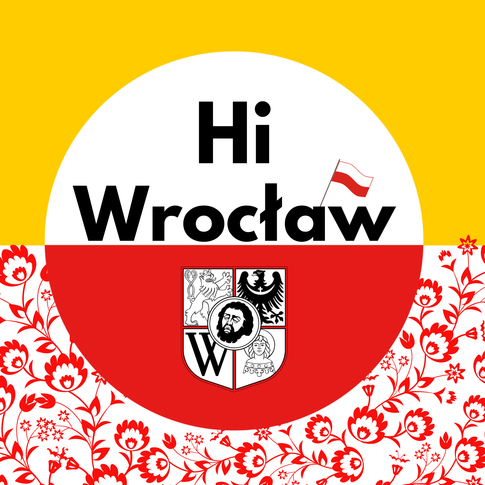

PROYECTS


Hi! I'm Manu Veliz. I was born 29 years ago in Tucuman, Argentina.
From that moment on, I've always enjoyed learning, helping people around me and solving problems with creativity.
Every day I enjoy life, spending time with my loved ones and fighting to fulfill my dreams.
I love the IT World.
Although I have experience like customer server, help desk , software developer, community manager and teacher, but I'm currently focusing on data science and data analytics.
But I also enjoy graphic design, web development, backend development, music, sports, literature, draw, photography, travel and speak with people from different countries.
To work as a secondary school teacher, teaching the subjects of information and communication technologies, computer science and programming.
Where I learned front end web development (html5 css5, bootstrap, react js) and backend (mongo db and express). Also Scrum, trello, slack, git and github.
Where I learned english, database (SQL), Networks, Cybersecurity, develpoment (JAVA, PHP, C#) and UML.
Where I learned develpoment (JAVA, HASKELL, C++), Computer Architecture, Maths, Statistics, Physics, Chemistry, Software Analysis and Designs.
Possibility of b2b contracts - software development classes (in english and spanish) IT consulting and software development.
We develop projects with the students of the institution. I was in charge of teaching the different subjects to high school and Degree’s students. Subjets: Data Base (SQL), Data Structure (Algorithms), Business IS, Frontend Dev Skills: SQL, JS, HTML, CSS, Scrum, Trello, GitHub, Slack, Bootstrap, Work-Team.
Tasks: Support of students, teachers, directors and public. Made sales, student registrations and reply calls and emails. Skills: Customer Service, Social Media, Google W, Microsoft 365, Adobe CC.